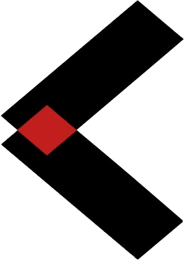
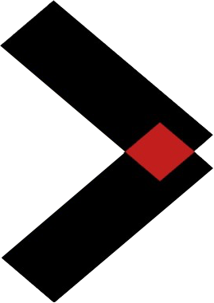
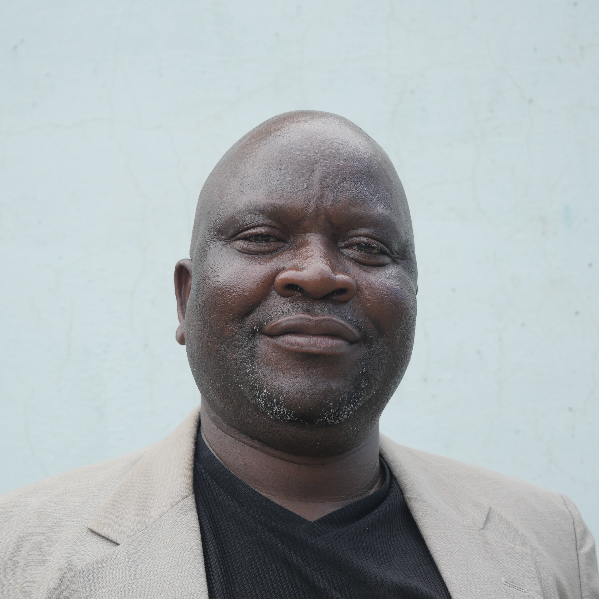
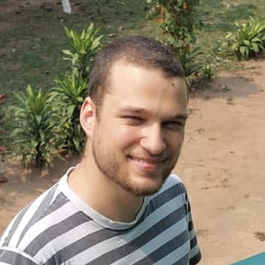

People
Executive Board
Directors
The Director of Finance & Operations oversees finances, grant management, institutional relationships, and coordination between the Executive Board and the field.
The Country Director heads all operations on the ground in Kananga and serves as the organization’s legal representative in the D.R. Congo.
Senior Management
Elie Kabue Ngindu
Head of Personnel

Jean-Freddy Kabasubabo Tshimanga
Head of HR & External Relations
Raphaël Fiston Mukendi Tshisanga
Deputy Head of HR & External Relations
Research Interns
Past Directors
Individuals who previously served as Director of Finance & Operations or Country Director.Manon Bellot
Director of Finance & Operations, 2024-2025
Country Director, 2023-2024
Next position: Consultant, World Bank
Previous position: MSc Development Economics, Université Paris 1 Panthéon Sorbonne
Robin Benabid Jegaden
Director of Finance & Operations, 2023-2024
Country Director, 2022-2023
Next position: Research Engineer in Economics, CNRS
Previous posititon: MSc Development Economics, Université Paris 1 Panthéon Sorbonne
Adrien Foutelet
Director of Finance & Operations, 2022-2023
Country Director, 2021-2022
Next position: PhD in Economics, Brown University
Previous position: MSc Analysis and Policy in Economics, ENS Lyon
Jean-François Coté
Director of Finance & Operations, 2021-2022
Country Director, 2020-2021
Next position: Consultant, CPCS
Previous position: Economist, Treasury Board of Canada
Arthur Laroche
Director of Finance & Operations, 2020-2021
Country Director, 2019-2020
Next position: PhD in Economics, UCL
Previous position: MSc Mathematics, Statistics, Economics, Ecole nationale des ponts et chaussées
Past Senior Management
Individuals who previously served in senior management roles, including Head of Human Resources, Head of HR & External Relations, Deputy Head of HR & External Relations, and Program Manager.
Dylan Reich
Program Manager, 2022-2023
Next position: Research Assistant, Oxford University
Previous position: MSc Development Management, Applied Development Economics, LSE
Past Interns
Individuals who previously served as interns.